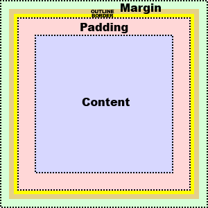

CSS box model

- Outline is part of margin (does not add size)
- Total width of element = width + left padding + right padding + left border + right border + left margin + right margin
- Total heigh of element = height + top padding + bottom padding + top border + bottom border + top margin + left margin
- To horizontally center element set margin property to auto (specified width required)
- Top and bottom margins of elements are sometimes collapsed into a single margin that is equal to the largest of the two margins (only top and bottom margins can collapse)
- Width and height properties specify width and heaight of content (not total width/height)
- The width and height can be set to auto (default) - browser calculates the width and height
- The max-width property is used to set the maximum width of an element
- The min-width property is used to set the minimum width of an element
- The max-height property is used to set the maximum height of an element
- The min-height property is used to set the minimum height of an element